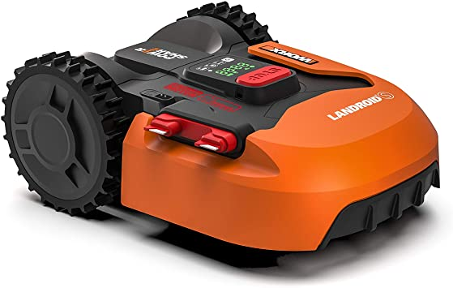

WORX WR130E S300
El WORX WR130E S300 és un tallagespa robòtic dissenyat per a jardins petits de fins a 300 m². Amb el seu avançat sistema de navegació i tall, aquest tallagespa ofereix un rendiment excepcional i una gespa ben cuidada sense que hagis de fer res.
El disseny compacte i silenciós del WORX WR130E S300 el converteix en una opció ideal per a usuaris que busquen un tallagespa fàcil d'instal·lar i mantenir. Amb la seva tecnologia AIA (Artificial Intelligence Algorithm), aquest tallagespa és capaç de treballar de manera eficient i intel·ligent, adaptant-se a les necessitats del teu jardí.
No esperis més i adquireix el teu WORX WR130E S300 per gaudir d'un jardí perfecte sense esforç.
Compra ara